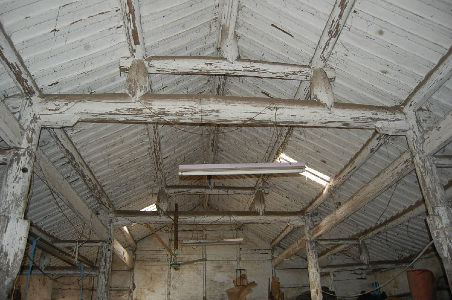

嘉兴市文物保护网 · 市级文物保护点 · 2020-11-03 · 原文

西木桥弄南粮仓位于嘉兴市秀洲区油车港镇澄溪村西木桥弄9号民宅对面。据形制判断为清代建造。粮仓原为油车港镇制油大户倪家所有，是用于磨菜籽油的加工场所。解放后归粮站所有，2001年转卖私人，现出租给家具厂使用。坐北朝南，系砖木结构，共三开间，占地面积125.4平方米，面阔12米，进深10.45米，顶高5.04米，檐高3.26米。抬梁和穿枋式五檩，前后各双步，用四柱。屋北侧嵌有3扇小木格窗户，地面铺设小青砖。屋外共有磨油底盘6只，直径为1.35米。西木桥弄南粮仓历史较长，反映了当时油车港镇制油业兴盛的情况，有较高的科学和历史价值。2009年公布为嘉兴市文物保护点。